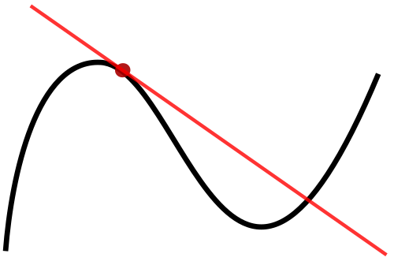

Definition of a Derivative
The derivative of a function f at a point x measures the instantaneous rate of change — the slope of the tangent line to the graph of f. Formally, it is defined by the limit:
If this limit exists, f is said to be differentiable at x. The process of finding the derivative is called differentiation. Derivatives are fundamental in mathematics, physics, engineering, and economics — used to model velocities, marginal costs, growth rates, and optimization problems.
Alternative notations include Leibniz notation dy/dx, Euler notation Df, and Newton notation ẏ (often used for time derivatives). The derivative function f' maps each x to the slope of the tangent line at that point.
Proof: Using the binomial theorem: (x+h)ⁿ = xⁿ + n·xⁿ⁻¹h + ... + hⁿ, then (f(x+h)-f(x))/h = n·xⁿ⁻¹ + terms with h → n·xⁿ⁻¹.
Examples: d/dx[x⁵]=5x⁴, d/dx[√x]=1/(2√x), d/dx[1/x²]=-2/x³
Proof: From definition: (f(x+h)g(x+h)-f(x)g(x))/h = f(x+h)(g(x+h)-g(x))/h + g(x)(f(x+h)-f(x))/h → f(x)g'(x) + g(x)f'(x)
Example: d/dx[x²·sin x] = 2x sin x + x² cos x
Mnemonic: "Low d-high minus high d-low, over the square of what's below."
Example: d/dx[tan x] = sec² x (from sin x/cos x)
In Leibniz notation: dy/dx = (dy/du)·(du/dx)
Examples: d/dx[sin(2x)] = 2cos(2x), d/dx[e^(x²)] = 2x e^(x²)
Example: d/dx[3x² - 2x + 5] = 6x - 2
Most functions require multiple rules. Example: d/dx[ x²·eˣ·sin x ] needs product rule twice.
d/dx[ sin²(3x) ] = 2 sin(3x)·cos(3x)·3 (power, chain, chain)
Derivatives of Elementary Functions
These standard derivatives, together with the rules above, enable differentiation of nearly any elementary function.
| d/dx [ eˣ ] | = eˣ |
| d/dx [ aˣ ] (a > 0, a ≠ 1) | = aˣ ln a |
| d/dx [ ln x ] (x > 0) | = 1/x |
| d/dx [ logₐ x ] (x > 0) | = 1/(x ln a) |
| d/dx [ sin x ] | = cos x |
| d/dx [ cos x ] | = -sin x |
| d/dx [ tan x ] | = sec² x |
| d/dx [ cot x ] | = -csc² x |
| d/dx [ sec x ] | = sec x tan x |
| d/dx [ csc x ] | = -csc x cot x |
| d/dx [ arcsin x ] | = 1/√(1-x²) (|x| < 1) |
| d/dx [ arccos x ] | = -1/√(1-x²) (|x| < 1) |
| d/dx [ arctan x ] | = 1/(1+x²) |
| d/dx [ arccot x ] | = -1/(1+x²) |
| d/dx [ arcsec x ] | = 1/(|x|√(x²-1)) (|x| > 1) |
| d/dx [ arccsc x ] | = -1/(|x|√(x²-1)) (|x| > 1) |
| d/dx [ sinh x ] | = cosh x |
| d/dx [ cosh x ] | = sinh x |
| d/dx [ tanh x ] | = sech² x |
| d/dx [ coth x ] | = -csch² x |
| d/dx [ sech x ] | = -sech x tanh x |
| d/dx [ csch x ] | = -csch x coth x |
| d/dx [ arsinh x ] | = 1/√(x²+1) |
| d/dx [ arcosh x ] (x ≥ 1) | = 1/√(x²-1) |
| d/dx [ artanh x ] (|x| < 1) | = 1/(1-x²) |


Higher-Order Derivatives
The second derivative f''(x) measures acceleration or concavity. Notations: f''(x), d²y/dx².
Example: f(x) = x³, f'(x) = 3x², f''(x) = 6x, f'''(x) = 6.